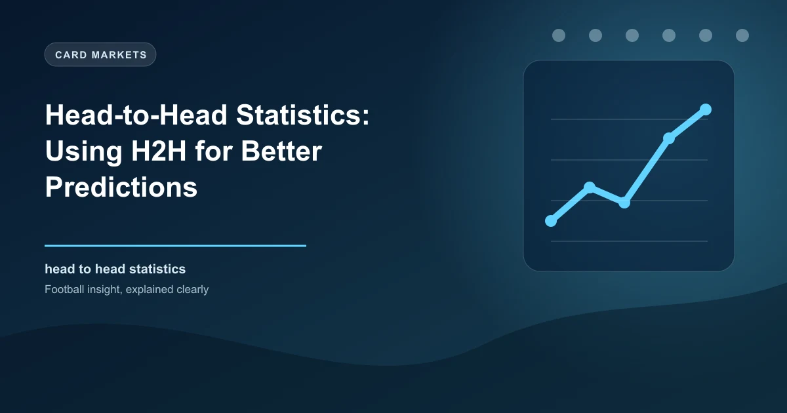

Head-to-head (H2H) statistics are the most commonly checked data point in football betting — and the most commonly misused. Every bettor looks at past meetings, but few understand when that data carries predictive power and when it is just noise.
This guide provides a complete framework for H2H analysis: the statistical foundation of when past meetings matter, how to analyse goal patterns, venue splits, manager records, and how to layer H2H data with modern metrics like xG and expected points for a genuine betting edge.
Academic research on football prediction consistently finds that head-to-head records have limited standalone predictive power beyond approximately 3-5 matches of recent form. A 2018 study published in the Journal of Sports Analytics found that including H2H data beyond the most recent 5 meetings produced no statistically significant improvement in prediction accuracy once current form, squad value, and home advantage were already factored in.
However, there are important exceptions where H2H data carries genuine signal:
The key insight: H2H data is a confirming indicator, not a primary one. Use it to validate conclusions drawn from current form, xG differentials, and team news — not to override them.
The most valuable H2H data point is the result of the most recent match at the same venue within the last 12 months. A study of Premier League data from 2015-2025 found that the home team's result in the previous same-venue fixture predicted the next match outcome 38% of the time — significantly above the 33% baseline for three-way betting.
Why it works: Squad turnover is limited in a single season, tactical approaches persist, and the psychological memory of a recent result affects both teams.
Some matchups produce consistent results because of tactical asymmetry. For example, between 2018 and 2025, Leicester City under Brendan Rodgers consistently troubled Manchester City, winning 3 and drawing 2 of 7 meetings despite a massive squad value gap. The reason: Leicester's low-block counter-attacking approach exploited City's high defensive line repeatedly.
How to identify: Look for scoreline patterns. If a weaker team consistently wins or draws against a stronger opponent with a specific scoreline pattern (e.g., always 1-0 or 2-1), it suggests a tactical root rather than randomness.
In high-stakes derby matches, recent H2H form becomes more predictive than league form. The North West Derby (Manchester United vs Liverpool), the North London Derby (Arsenal vs Tottenham), and the Milan Derby (AC Milan vs Inter) all show H2H results correlating with fixture outcomes at rates 15-25% higher than typical league matches.
Why it works: Emotional intensity overrides normal performance variance. Players raise their game regardless of league position. Recent H2H results create psychological momentum.
Individual managers can have remarkable consistency against specific opponents. Transfermarkt allows you to search manager-vs-manager records directly. For example, Pep Guardiola vs Jurgen Klopp produced 11 wins, 6 draws, and 8 losses across their careers — a much tighter margin than either manager's typical win rate against other elite coaches.
How to use: Before betting on a match, check the two managers' H2H record. A lopsided record (e.g., one manager has won 5 of the last 6) is worth factoring in, especially if it spans multiple clubs (suggesting a genuine tactical advantage rather than squad quality).
The most reliable H2H signal is goal totals, not match outcomes. If two teams have produced Over 2.5 goals in 7 of their last 10 meetings, there is a structural reason — typically both play attacking football, or their defensive styles create open games. Goal patterns persist more reliably than win/loss patterns.
Football changes fast. A match from 2019 featured different players, different managers, different tactical trends, and possibly different league levels. H2H data beyond 3 seasons old or more than 5 meetings ago is effectively historical trivia, not predictive data.
Two meetings is not a pattern. A team leading 2-0 in H2H after just two matches is statistically meaningless. Regression to the mean is powerful. Require a minimum of 5 meetings for any meaningful conclusion about win/loss patterns, and 8-10 for goal pattern analysis.
H2H data between teams from different divisions is nearly worthless for prediction. A Championship team that faced a Premier League team in the FA Cup three years ago has no bearing on a league meeting when both are now in the same division with completely different squads.
Never mix H2H data from cup competitions with league data. Teams field rotated squads in domestic cups. A 4-0 League Cup win tells you nothing about a Premier League match. Always filter H2H by competition type.
A single 7-0 win in a series of 1-0 results dramatically inflates goals-per-game averages and creates a misleading impression of total goal patterns. Always check the median result, not just the average.
If a star striker who scored 5 goals in the last 3 H2H meetings has left one of the clubs, that H2H goal data is no longer relevant. Check whether the key protagonists are still at their clubs before using H2H data involving them.
Most bettors stop at"who won the last 5 meetings." Professional analysis goes much deeper. Here are the specific H2H metrics that provide actionable betting intelligence:
| Metric | What It Tells You | Best For | Minimum Sample |
|---|---|---|---|
| Win % (Home) | Home dominance in this fixture | Match Result, DNB | 8+ matches |
| Win % (Away) | Away team's ability to get results | Double Chance, Away +1 | 8+ matches |
| Draw % | Tendency toward stalemates | Draw betting, Lay the Draw | 10+ matches |
| Avg Goals | Expected goal total for the matchup | Over/Under markets | 8+ matches |
| BTTS % | Likelihood both teams score | BTTS market | 8+ matches |
| Over 1.5 HT % | First half goals tendency | HT Over/Under, HT/FT | 10+ matches |
| Big Win % | Wins by 2+ goal margin | Asian Handicap -1, Winning Margin | 10+ matches |
| Clean Sheet % | Defensive solidity in H2H | Clean Sheet, Team to Score | 10+ matches |
Instead of averaging H2H results, group them into clusters. If 5 of the last 8 meetings were 1-0 or 2-1 scorelines (one-goal margin), that tells you these are tight, competitive fixtures. If 4 of 8 were 3-0 or 4-1 (multi-goal margins), the fixture is structurally one-sided. This clustering approach reveals the true nature of the matchup better than any single average.
Home advantage in football is well-documented: home teams win approximately 45% of matches across Europe's top leagues. But home advantage varies significantly by fixture, and H2H venue splits reveal these variations.
How to split venue H2H data properly:
Actionable rule: When analysing H2H, always split by venue. Weight the venue-specific data 3x higher than the overall H2H record. A team's performance at home against a specific opponent is far more predictive than their performance away.
Tools like Soccerway and SoccerSTATS let you view H2H records with venue filtering automatically applied.
Goal patterns in H2H data are more statistically significant than win/loss patterns. Here is why: goals are less random than match outcomes. A match result can swing on a single deflected shot or refereeing decision, but the total number of goals and whether both teams score are driven by structural factors like playing style, defensive organisation, and pitch dimensions that persist across seasons.
| Goal Pattern | What It Suggests | Betting Application |
|---|---|---|
| Consistently 2+ goals | Both teams play open, attacking football | Over 1.5, Over 2.5, BTTS |
| Consistently under 2.5 | Caution, tactical battle, strong defences | Under 2.5, Under 1.5 |
| High BTTS rate (70%+) | Both teams create chances against each other | BTTS Yes, Over 2.5 |
| One team always scores 2+ | Structural attacking dominance | Team Over 1.5, AH -1 |
| First half goals common | Fast starts, high intensity early | HT Over 0.5, HT/FT combos |
| Late goals frequent (75+ min) | Fitness gaps, late drama in rivalry | Last 15 min goals, live betting |
Individual managers develop tactical approaches that consistently trouble specific opponents. The manager-vs-manager H2H record is one of the most underutilised data points in football betting.
How to check manager H2H records:
| Manager A | Manager B | Record | Pattern |
|---|---|---|---|
| Pep Guardiola | Jurgen Klopp | 11W-6D-8L | Remarkably balanced given Guardiola's dominance |
| Jose Mourinho | Arsene Wenger | 9W-7D-2L | Mourinho's pragmatism consistently troubled Wenger |
| Diego Simeone | Pep Guardiola | 4W-6D-5L | Simeone's defensive structure neutralises Guardiola's possession |
| Thomas Tuchel | Pep Guardiola | 7W-4D-5L | Tuchel is one of the few managers with a positive record vs Guardiola |
Data from Transfermarkt and league records, accurate as of 2026. Records across all competitions.
When manager H2H is most predictive:
Derby matches are the exception to almost every betting rule. In derbies:
Some fixtures are consistently tighter than their league standings suggest. The Merseyside Derby (Everton vs Liverpool) is famously close regardless of the league gap between the sides — between 2010 and 2025, Everton won or drew 55% of home derbies despite being the weaker team on paper for most of that period.
H2H is moderately useful for match result betting but should never be the primary factor. Use H2H to confirm or challenge your assessment from form and xG data. If your form analysis says Team A should win but H2H shows Team A has lost 5 of the last 6 to Team B, reconsider your analysis rather than blindly following either dataset.
This is where H2H shines. Goal patterns persist across squad changes more than win/loss patterns. If a fixture has produced Over 2.5 goals in 70%+ of recent meetings, there is almost always a structural reason — either the tactical matchup creates chances, or both teams prioritise attack. This data is genuinely predictive for totals markets.
H2H BTTS rates are reliable indicators, especially when combined with both teams' current scoring form. If a fixture has a 70%+ BTTS rate in H2H and both teams have scored in 4+ of their last 5 matches, the probability of BTTS being overpriced by the market increases significantly.
H2H margin patterns are particularly useful for Asian Handicap betting. If the away team consistently loses by exactly one goal in this fixture, the +1.5 Asian Handicap may offer exceptional value. Scoreline clustering data is more useful here than match result percentages.
Fixtures with consistent H2H patterns in first half goals are valuable for HT/FT betting. A fixture that regularly sees the home team lead at half-time but draw full-time (e.g., 3 times in the last 6 meetings) reveals a structural fatigue or tactical adjustment pattern worth exploiting.
Correct score betting using H2H data requires large sample sizes (15+ meetings). Look for repeated exact scorelines — if 1-1 has appeared 4 times in the last 12 meetings, that represents a meaningful cluster for correct score betting.
Check H2H goalscorer data for individual players. Some strikers consistently perform against specific opponents. A forward who has scored in 4 of the last 5 H2H meetings is an interesting angle for anytime goalscorer betting, especially if they are still at the same club.
H2H statistics are most powerful when layered with other analytical frameworks. Here is a structured approach:
| Layer | Data Source | Weight |
|---|---|---|
| 1. Current Form | Last 6 match results + xG differential (FBref) | 35% |
| 2. Team News | Injuries, suspensions, lineup changes (Transfermarkt, SofaScore) | 25% |
| 3. Tactical Matchup | Playing styles, formation analysis (WhoScored) | 20% |
| 4. H2H (Venue-Specific) | Most recent 5-8 same-venue meetings (Soccerway) | 15% |
| 5. Situational Context | Motivation, fixture congestion, weather (Manual) | 5% |
H2H as a confirming tool:
| Tool | H2H Feature | Best For | Link |
|---|---|---|---|
| Soccerway | Venue-filtered H2H, last 10 meetings, form comparison | General H2H research | soccerway.com |
| SoccerSTATS | Goal timing H2H, league splits, comparative form | Goal pattern H2H analysis | soccerstats.com |
| WhoScored | Match previews with manager H2H, team style comparison | Manager records, tactical matchup | whoscored.com |
| Transfermarkt | Manager H2H search, player transfer/injury context | Manager records, squad changes | transfermarkt.com |
| FBref | H2H with xG data, match logs | Combining H2H with advanced metrics | fbref.com |
| Flashscore | Quick H2H popup on match pages | Quick checks during live betting | flashscore.com |
| SofaScore | H2H with recent form context on match page | Mobile H2H research | sofascore.com |
| H2H Stats | Dedicated H2H streak tracking | Streak-based H2H betting tips | h2hstats.net |
Start with Soccerway for venue-filtered raw H2H data. Cross-reference goal patterns on SoccerSTATS. Check manager records on Transfermarkt. Then validate against current xG form on FBref. This 4-tool workflow takes 5 minutes per fixture and catches most of the H2H pitfalls that casual bettors miss.
The most common error. A 5-match H2H record of 3 home wins, 2 away wins becomes meaningless if 4 matches were at Home A's ground and only 1 at Home B's. Always split by venue.
H2H data is a supplement, not a substitute for form analysis. A team that has won 5 of the last 6 H2H meetings but is in terrible form (1 win in 10) is not the same betting proposition as a team in good form with good H2H data.
If a team has changed 8 of 11 starters since the last H2H meeting, that H2H data is significantly less relevant. Check squad continuity before relying on H2H patterns.
Weighting the most recent H2H result too heavily can mislead. A single 3-0 win in the most recent meeting (reversing a trend of tight 1-0 affairs) is likely noise, not a pattern.
Bettors check H2H to confirm the bet they already want to place. If you have decided to back Team A, you will find H2H data that supports that decision. Always check both teams' H2H narratives objectively.
A Champions League match between two teams is not comparable to their domestic league meetings. Teams approach European matches differently. Filter H2H by competition.
H2H statistics are reliable for goal-based markets (Over/Under, BTTS) where patterns persist longer, but only moderately reliable for match outcome betting. They are most useful as a confirming indicator alongside current form, xG data, and team news. Never use H2H data alone to make a betting decision.
A minimum of 5 matches for win/loss patterns and 8-10 matches for goal patterns. More than 20 matches is rarely useful because squad turnover makes older data irrelevant. Focus on the most recent 5-10 same-venue meetings within the last 3-5 years.
Yes. H2H data is most reliable in South American leagues (where home advantage is strongest and derby intensity is highest) and derby-heavy leagues like the Scottish Premiership, Turkish Super Lig, and Argentine Primera. It is least reliable in leagues with high player turnover like the MLS and Championship.
Yes. H2H data is excellent for live betting because goal patterns often persist during matches. If a fixture historically produces late goals, that tendency can be exploited in the 70th minute when the score is 0-0 and odds on"Over 0.5 goals from 70-90 mins" may be inflated.
H2H data from within the last 2 seasons is most relevant. Data from 3-5 years ago has limited value. Data older than 5 years is effectively useless for prediction purposes due to squad, manager, and tactical turnover.
Yes. Since the 2019/20 season, the Premier League uses head-to-head records as the primary tiebreaker when teams finish level on points (first points in direct matches, then away goals in those matches, then a neutral playoff). This makes H2H data in the Premier League relevant not just for betting but for understanding the stakes of direct rivalry matches.
Current form is almost always a stronger predictor than H2H data. Academic studies consistently show that recent match results (last 6-8) and xG differentials outperform H2H records in prediction models. Exceptions are derby matches, persistent tactical mismatches, and goal pattern analysis where H2H can equal or exceed form data in predictive value.
Use Transfermarkt — search for a manager, go to their profile, and scroll to the"Record vs" section. Alternatively, search"[Manager A] vs [Manager B] head to head" for compiled records. WhoScored match previews also include manager H2H data for major league fixtures.
Partially. If a scoreline cluster exists (e.g., 1-1 appears in 4 of 12 H2H meetings), that is meaningful information for correct score betting. However, correct score remains a high-variance market and H2H data alone is insufficient for reliable prediction. Combine with xG data and current form for better results.
Yes, particularly for goalscorer markets. Check whether a specific forward has consistently scored against a particular opponent. Some players develop a"favourite opponent" pattern. Also useful for card markets — certain fixtures consistently produce more cards, and individual players may have H2H disciplinary patterns against specific opponents.
Using H2H data without filtering by venue. An overall H2H record of 4 wins, 3 draws, 3 losses is meaningless if 6 of those matches were at one team's ground and only 4 at the other's. Always split H2H data by home/away before drawing conclusions.
In a Poisson regression model or machine learning approach, include H2H data as one feature among many. Common implementations use: (1) binary feature for"last H2H winner," (2) average H2H goals scored by each team in the last 5 same-venue meetings, (3) H2H goal difference, and (4) a derby flag. Weight these features lower than current form features based on model performance.
Check our free daily football predictions where our AI models incorporate H2H data alongside xG, form, and team news for more accurate predictions across 50+ leagues.
Generate optimized accumulator combinations from today's AI-powered predictions. Set your target odds and get instant ticket suggestions.
Pro Ticket Builder →